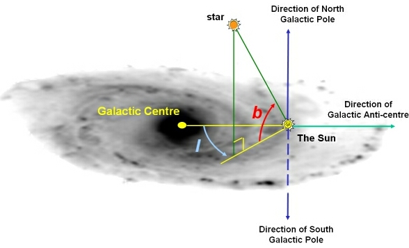

If we use the galactic coordinate system to locate objects within the Galaxy, we can identify the north galactic pole (NGP) as the point where the galactic latitude ( b ) = +90 degrees.

The galactic coordinate system. Positions of objects are measured in terms of their galactic longitude ( l ) and galactic latitude ( b ). The galactic equator slices the Galaxy in half (top and bottom).
The NGP lies along a line that passes through the observer and is perpendicular to the galactic equator. At the other end of this line is the south galactic pole with b = -90 degrees.
The number density of stars decreases as we look from the galactic centre towards the galactic poles, as we are looking out of the disk of the Milky Way.
The NGP is located in the constellation Coma Berenices, with celestial coordinates (epoch J2000.0):
| RA = 12h 51m 26.00s | Dec = +27d 7m 42.0s |